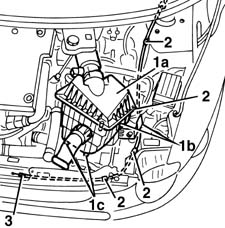

7025A28 bonnet lid opening cable - r r
- Path
- Procedures > 70 FITTINGS > 7025 COMPARTMENT LIDS > 7025A LOCATION OF BONNET WIND NOISE > 7025A28 bonnet lid opening cable - r r
- Kind
- repair procedure (removal / refitting; the operation number is the code)
- Applies to
- all engines; all production periods
- Interactive page
- https://sloeber94.github.io/elrnDB-fMltpl/en/#/2892135
Applies to: all engines; all production periods
 Removing
Removing
 Refitting
Refitting7025A34 bonnet lid lock (one) - r+r or repair
5530B52 Battery DRIP TRAY/SUPPORT - R.R.
Remove the tray under the battery.
1. Working in the car interior, remove the cover from the side indicated by the arrow.
2. Disconnect the control cable (2a) from the lever (2b) and retainer (2c).
Applies to: all engines; all production periods
1. Working in the engine compartment, disconnect the filter unit (1a) from the retainers (1b) and (1c), then move it.
2. Disconnect the control cable retaining clips.
3. Withdraw the control cable from the engine compartment.

Applies to: all engines; all production periods
Refitting
RemovingCheck that the control cable is undamaged.
Refit the control cable, inserting it from the engine compartment side.
Secure the control cable with the appropriate clips.
Fit the filter unit and connect it to the retainers.
Connect the control cable to the lever and retainer.
Fit the cover.
Refit the tray under the battery.